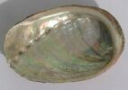

 Avant êcovi l's ormèrs et hâlé la tête et l'pitôsyi, nou les scrobe bein iun à iun: pis nou les bat atout eune pétite mailloche pouor les amollier et nou l's enflieuthe. A ch't heu nou fricache des tranches dé lard tch'a 'té dêsalé et pis nou fricache les ormèrs dans la graisse. (Cèrtaines gens font sèrvi du beurre à la pliaiche dé chutte graisse dé lard fricachi). Auprès ch'la, nou met ormèrs et lard à mitonner pouor sept ou huit heuthes ou pus - dé chouaîx dans l'fou - n'oubliant pas l'sé. Un co tchuits nou-s-y met d'l'affêqu'ment et nou-s'ajouôte du pèrsi. Nou drèche lé fricot tout caud, atout ofûche des patates souos lus pé
Y'a sans doute tchiques variàtions à la r'chette, s'lon les gens et les parties d'l'Ile.
À bouoilli:
Scrobez bein l's ormèrs dans l's êcales et scrobez l's écales étout. M'ttez à bouoilli dans d'l'ieau pouor à bein près chîntch'heuthes. Ajouôtez du sé en les m'ttant à tchuithe et souongniz d'les garder couvèrts d'ieau. Nou les pique atout eune fourchette sus la fin d'la tchuituthe. Nou l's êcovit et nou les sèrt fraids, les mangeant auve du paîvre et du vinnaigre.
À la daube:
Aut'fais étout nou m'ttait d's ormèrs à la daube. V'là tchi veurt dithe qué nou les bouoillait et nou les m'ttait au picl'ye dans du vinnaigre, les consèrvant aussi longtemps comme nou voulait. Il est même probabl'ye tch'i' y'ait des gens acouo à ch't heu, en Jèrri, tch'en font autant mais les Dgèrnésiais, ieux, n'en ont pas 'couo pèrdu l'habitude.
Viyiz étout: